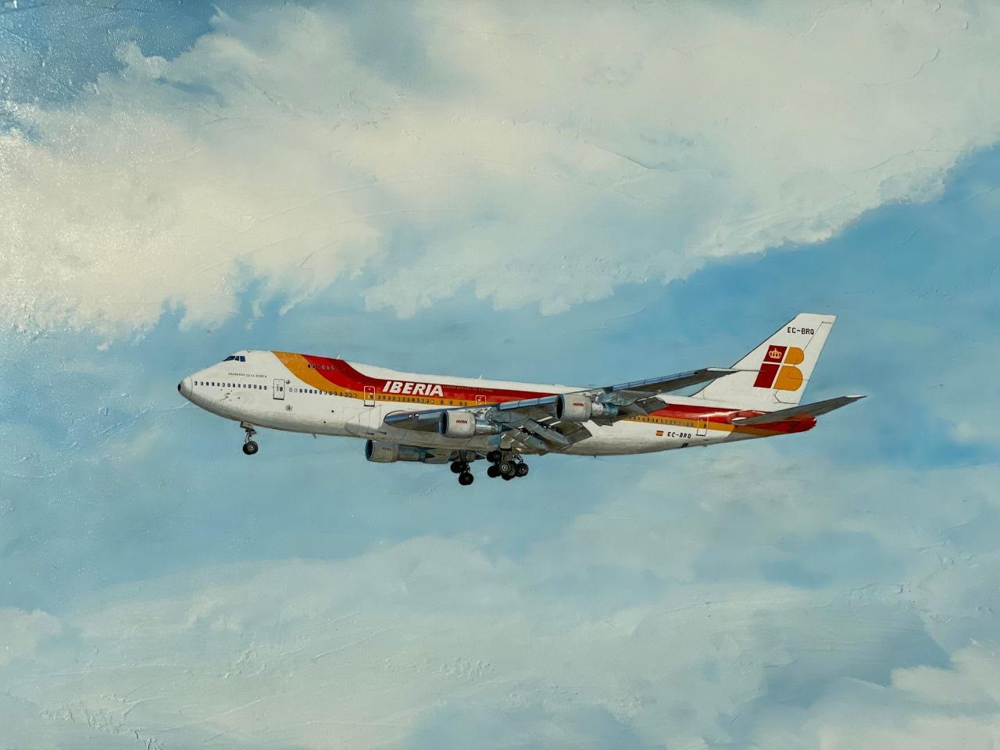

The Boeing 747 is a large, long-range wide-body airliner and cargo aircraft manufactured by Boeing Commercial Airplanes in the United States. After introducing the 707 in October 1958, Pan Am wanted a jet 2.5 times its size, to reduce its seat cost by 30% to democratize air travel. In 1965, Joe Sutter left the 737 development program to design the 747, the first twin aisle airliner. In April 1966, Pan Am ordered 25 Boeing 747-100 aircraft and in late 1966, Pratt & Whitney agreed to develop its JT9D engine, a high-bypass turbofan. On September 30, 1968, the first 747 was rolled out of the custom-built Everett Plant, the world's largest building by volume. The first flight took place on February 9, 1969, and the 747 was certified in December of that year. It entered service with Pan Am on January 22, 1970; it was the first airplane dubbed a "Jumbo Jetu"
